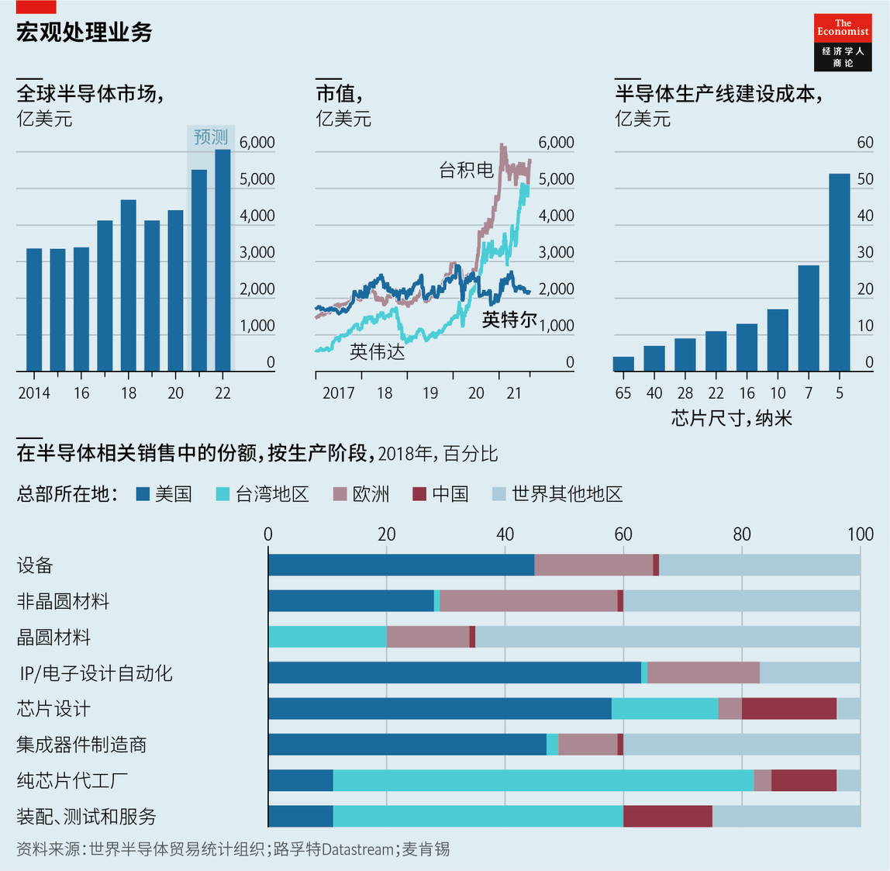
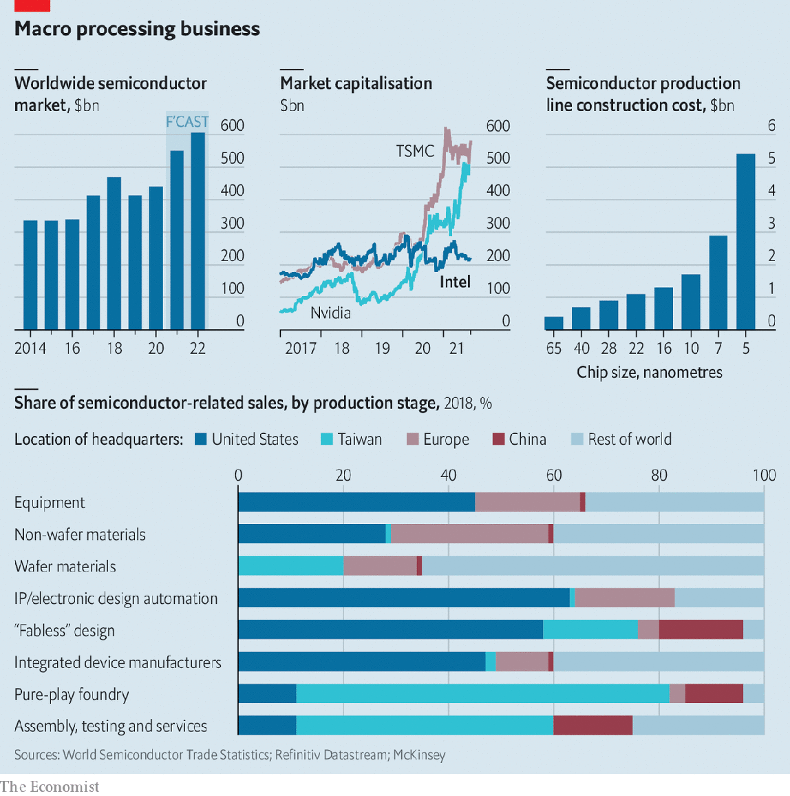

2021-09-19T15:47:40+00:00
盖尔辛格的开放式开局
英特尔的转机与芯片制造的未来
美国这家向来封闭的半导体巨头开窗换气，试图撼动整个行业

萨蒂亚·纳德拉（Satya Nadella）2014年接任微软CEO后做的第一件事就是“打开”Windows。对于这家软件公司这颗皇冠上的明珠，他的前任们向来严加保护，隔绝外界冲击。和他们不同，纳德拉让这个操作系统暴露于竞争的新风中。微软的其他程序原本几乎只能在Windows上运行，如今也可以运行于其他操作系统之上，包括Linux这个曾被微软斥为“毒瘤”的“开源”对手。这一步为微软的软件拓宽了市场，同时也迫使Windows在更平等的条件下与其他操作系统竞争而不断自我提升。这一过程撼动了微软的企业文化，帮它摆脱了垄断者的恶名，也为微软惊人的复兴铺平了道路。它的市值飙升，突破2万亿美元。
现在，曾经雄霸天下的“Wintel”联盟（个人电脑依赖Windows软件和英特尔制造的芯片运行）中的另一位主角也想打开窗户了。和微软对待自家操作系统一样，美国半导体巨头英特尔也一直小心翼翼地保护着自己核心的芯片制造业务。近年来，经历新品延误、技术押注失败、管理层变动等连串问题后，英特尔需要注入一些新鲜空气了。“通过我们的代工服务（为其他芯片制造商生产处理器），我们的工艺、我们的制造技术、我们的知识产权，现在都将向世界开放。”英特尔新任CEO帕特·盖尔辛格（Pat Gelsinger，见上图）宣称。
如果成功，盖尔辛格的战略将重塑芯片业，让这个总值6000亿美元、在快速数字化的全球经济中处于核心地位的产业进一步提升。如果失败，短期内可能加剧芯片短缺，使得从汽车到数据中心的各类产品的制造商日子更加难过。更长期而言，它可能导致本身已安逸无争的芯片制造市场进一步集中，而英特尔也将更加落后于对手。它还可能巩固亚洲在该行业中的主导地位，引发各种地缘政治争端。
虽然微软和英特尔身处科技业的不同领域，但它们在自身结构上曾经有如双胞胎。正如微软把Windows和Office（微软的商业应用软件包）打造成一对最佳拍档那样，英特尔一直在设计自己的微处理器，并在专门为此做了优化的“晶圆厂”里制造它们。随着科技业变得更庞大、更多元也更互联，这种曾经占主导的“集成器件制造商”（以下简称IDM）模式已经失宠（正如随着其他科技“生态系统”的涌现，垂直整合模式开始拖累微软）。就像昔日的微软那样，英特尔的傲慢和封闭令其他芯片制造商难以与之合作，比如把不同的芯片设计结合起来。相反，它们各自深耕自己的领地，日益专攻芯片设计（如AMD、安谋、英伟达和高通）或者芯片制造（台积电是最显著的例子）。
相比微软，英特尔保持封闭的时间更久，这得益于云计算的蓬勃发展——这种计算服务推动了对数据中心的服务器所采用的高价高端处理器的需求，而这些数据中心大多采用英特尔的X86架构。2020年，这些产品在英特尔780亿美元的总收入中占了三分之一，在210亿美元的净利润中占了大头。但现在，英特尔正受到安谋等公司推出的开源系统的猛然冲击。全球大多数智能手机（英特尔错过的市场）都采用安谋的架构，一些数据中心也开始采用它。安谋去年被英伟达宣布以400亿美元收购（不过这笔交易可能会被反垄断机构中止）。与此同时，趁英特尔在技术和管理上走歪路的当口，台积电在尖端技术和产量上都实现了赶超。目前，台积电和英伟达的市值均为英特尔的两倍多（见图表），虽然收入和利润比它低。
今年2月，盖尔辛格成为英特尔过去三年里的第三位CEO。他之前曾任公司的首席技术官，直至2009年被逼走。这一经历，再加上他后来担任软件公司VMware老板的经历（他自称是“从芯片行业休假”的十年），使他能在短短几周内实施大变革。他的“IDM 2.0”战略不像部分维权投资者希望的那样把英特尔分拆成一家芯片代工厂和一家芯片设计公司，反而是加倍整合。他视之为英特尔的竞争优势。而且，新街研究（New Street Research）的分析师皮埃尔·费拉古（Pierre Ferragu）指出，独立的代工部门很难与台积电竞争，他估计英特尔的制造成本要比台积电高出70%。
相反，英特尔选择了某种虚拟分离。它将更多使用外部代工厂，包括台积电，以节省成本和利用台积电领先的制造工艺。7月，盖尔辛格表示，公司要在高端芯片制造方面赶上台积电和韩国三星。他满怀雄心，计划每年至少推出一款新的高端处理器，其中晶体管的尺寸不断缩小，运算速度不断提高。英特尔的目标是在2025年再次领先其他公司，设计出的芯片不再以纳米计量，而是以埃米计。埃米是比纳米还小一级的公制长度单位量，一埃米等于百亿分之一米。
同时，英特尔将重启自己的芯片代工业务，以向其他公司提供这种制造魔法。与在2012年创立但从未真正起飞的前身部门不同，英特尔代工服务事业部（Intel Foundry Services，以下简称IFS）将拥有独立的损益表，而且很快会新建至少两家芯片代工厂，选址在美国亚利桑那州，总造价为200亿美元。
盖尔辛格正在全球各地巡讲，解释和宣传他的新战略。例如，9月7日在慕尼黑的一个贸易展上，他宣布英特尔将在欧洲建立两家芯片代工厂。他将需要不遗余力地施展他令人羡慕的沟通能力（他与纳德拉的另一点相似之处）来说服投资者。在今年早前一轮涨势过后，英特尔的股价已大致回落到宣布对他的任命前的水平。盖尔辛格似乎毫不气馁。他说，投资者在提出两个非常合理的问题：英特尔能否成功执行这一战略？其成效何时能体现在收益上？“我接受这样的质疑。”
一定程度上，答案将取决于英特尔能否转变自己的态度。这意味着要重燃盖尔辛格所说的“格鲁夫文化”——源自该公司极具传奇色彩的联合创始人安迪·格鲁夫（Andy Grove），他最为人熟知的是那句“只有偏执狂才能生存”的名言。还需要挣脱自身的狭隘。“我的团队要把另一组肌肉练起来。”英特尔的首席技术专家安·凯莱赫（Ann Kelleher）解释道。她表示，这包括必须学会如何与外部客户合作，运用其他公司设计的工具。
找回格鲁夫那一套
但最重要的是，成功将有赖于完美无缺的执行。尖端芯片制造涉及约700个加工步骤和在纳米尺度上做一层叠一层的光刻和刻蚀。让事情变得更加复杂的是，英特尔终于要全面采用“极紫外光刻技术”（台积电等公司已采用该技术取得极佳效果）。6月底，英特尔宣布下一代服务器处理器的生产将延后数月，这项任务的棘手可见一斑。
IFS也面临挑战。大多数分析师的看法与费拉古一致，认为英特尔的代工业务无法真正与台积电较量。这不单是成本、规模以及技术落于人后的问题。哈佛商学院教授史兆威（Willy Shih）指出，英特尔还必须说服客户相信自己能克服同时作为IDM和代工厂的固有利益冲突。假如将来出现半导体短缺，英特尔可能面临一个抉择：是将产能分配给自家处理器，还是履行与代工业务的客户签订的合同？
但英特尔还是希望能为自家代工厂开辟一片宽广肥沃的根据地。据传它有意以约250亿美元收购格罗方德（GlobalFoundries）以壮大实力。这家公司2009年从AMD剥离出来，现由阿联酋一主权财富基金拥有。尽管收购谈判陷于停滞，而且格罗方德刚在8月申请上市，但等到这家较小的公司衡量过其他投资者的兴趣以及它可能获得的价码，收购谈判就有可能重启。
无论能否拿下格罗方德，英特尔都决意树立开放的新精神。它将不再强迫客户在设计芯片时使用英特尔的专有工具。更重要的是，它将授权客户使用英特尔的芯片设计，以及它为把半导体“封装”成电子设备中所用的芯片而开发的技术。亚马逊AWS等大型云计算供应商将能把英特尔服务器处理器的设计拿来，按自己数据中心的需要做优化调整，结合其他设计来制造一块芯片。
对于这样的混搭操作，市场的兴趣似乎日渐浓厚，咨询公司林利集团（Linley Group）的林利·格温纳普（Linley Gwennap）表示。IFS的第一批客户包括AWS和高通。人们也开始对在国内完成这样的操作感兴趣。美国政界人士指出，鉴于目前全球疫情引发芯片短缺，再加上来自中国的潜在威胁——特别是在台湾地区问题上，芯片制造集中在亚洲令人担心。预计美国国会很快将批准一项520亿美元的补贴计划。欧盟的补贴计划还要更宏大。
盖尔辛格承认，在亚洲建新厂的成本会低30%至40%，“但政府的扶持资金使我能（在美国国内）投资更多，推进更快”。这对特别关注安全性的客户很有吸引力。美国国防部最近决定使用英特尔的美国代工厂。事实上，吸引政府资金可能是英特尔自家代工厂存在的主要理由，券商盛博的史黛西·拉斯贡（Stacy Rasgon）指出。但依赖政府扶持有可能削弱盖尔辛格希望加强的那种竞争优势。而身为一家复杂到让人脑袋发胀的硬件企业，英特尔可能发现自己比微软更难扭转局面，后者受益于软件行业变化更快这一特征。
因此所下的赌注会很大，而且不仅是对英特尔而言。假如它的优势继续流失，结果几乎肯定是进一步整合。如今已为数不多的几家大型芯片制造商最终可能缩减到只剩双头垄断。即使有更多企业存活下来，大多数晶圆厂可能将完全设在亚洲（尽管台积电计划在亚利桑那州也建一座）。据盖尔辛格估计，全球半导体产能已有约80%位于亚洲，美国有15%，其余在欧洲。
盖尔辛格的开局招数将迎来什么结果，不但值得西方政府关注，当今的科技巨头们也应留神观察。跟之前的微软一样，英特尔陷入困境主要是因为过度保护自己皇冠上的明珠。其他公司可能做出判断：避免此类问题的最佳方案是先发制人地敞开大门。苹果对自家App Store的管理可能不再那么严苛；Facebook可能让自己的社交网络更好地与对手连通；谷歌可以给予手机制造商更大的自由度来调整安卓移动操作系统。这或许既能减轻反垄断机构的忧虑，也能让股东们更加满意。
2021-09-19T15:47:40+00:00
Gelsinger’s opening gambit
Intel’s turnaround and the future of chipmaking
America’s historically hermetic semiconductor giant opens up—and tries to shake up its industry in the process
WHEN SATYA NADELLA took over as boss of Microsoft in 2014 he started by opening Windows. Unlike his predecessors, who had kept the software giant’s crown jewel hermetically sealed from the outside world, he exposed the operating system (OS) to the breeze of competition. The firm’s other programs, which used to run almost exclusively on Windows, could now operate on other OSs, including Linux, an “open-source” rival which Microsoft had previously called a “cancer”. The manoeuvre both broadened the market for Microsoft’s software and improved Windows by forcing it to compete with rival OSs on more equal terms. In the process, it shook up Microsoft’s culture, helped it shed its reputation as a nasty monopolist and paved the way for a stunning revival that saw its market value soar above $2trn.
Now the other half of the once almighty “Wintel” arrangement, whereby PCs would run on Windows software and chips made by Intel, wants to throw the windows open. The American semiconductor giant has long guarded its core chipmaking business as jealously as Microsoft did its OS. After years of product delays, misplaced technology bets and changing management, it is ready for some fresh air. “Our processes, our manufacturing, our intellectual property through our foundry services [producing processors for other chipmakers]: all will now be available to the world,” professes Pat Gelsinger (pictured), Intel’s newish boss.
If successful, Mr Gelsinger’s strategy could reshape a $600bn industry at the heart of the fast-digitising global economy for the better. Failure could, in the short run, compound the chip shortages that are making life difficult for manufacturers of everything from cars to data centres. In the longer term, it could lead to further concentration of the already cosy chipmaking market, with Intel increasingly eclipsed by rivals. And it may cement Asia’s dominance of the industry, creating all kinds of geopolitical complications.
Although Microsoft and Intel reside in different parts of the tech universe, they used to be structural twins. Just as Windows and Office, Microsoft’s package of business applications, were designed to work best with each other, Intel has been designing its own microprocessors and making them in “fabs” optimised for the purpose. As the tech industry has grown bigger, more diverse and more networked this once-dominant “integrated device manufacturer” (IDM) model has fallen out of favour (just as vertical integration became a drag for Microsoft as other tech “ecosystems” popped up). As with the Microsoft of old, Intel’s arrogance and insularity discouraged other chipmakers from working with it, for instance by combining chip designs. Instead they ploughed their own furrows, focusing increasingly either on designing chips (for example, AMD, Arm, Nvidia and Qualcomm) or fabricating them (notably Taiwan Semiconductor Manufacturing Company, TSMC).
Intel has managed to stay closed for longer than Microsoft thanks to the boom in cloud computing, which boosted demand for pricey high-end processors that power servers in data centres where its so-called X86 architecture is now dominant. These contributed one-third of Intel’s total revenue of $78bn in 2020, and much of its $21bn in net profit. Now, though, the company is being overwhelmed by open systems like that of Arm, whose blueprints are used in most of the world’s smartphones (a market which Intel missed) and are starting to appear in data centres—and which was last year acquired by Nvidia for $40bn (though trustbusters may yet scupper the deal). At the same time, TSMC took advantage of Intel’s technological and management missteps to pull ahead in both cutting-edge technology and production volume. Both TSMC and Nvidia are now worth more than twice as much as Intel (see chart), despite lower revenues and profits.
Enter Mr Gelsinger, who in February became Intel’s third CEO in as many years. He was the firm’s chief technology officer until 2009, when he was pushed out. This background—plus what he calls a decade-long “vacation from the chip industry” as the boss of VMware, a software-maker—allowed him to shake things up within weeks. Rather than split Intel into a foundry and a chip-designer, as some activist investors wanted, his “IDM 2.0” strategy doubles down on integration. Mr Gelsinger sees this as Intel’s competitive advantage. And an independent foundry arm would struggle to compete with TSMC, argues Pierre Ferragu of New Street Research, who estimates that Intel’s manufacturing costs are 70% higher than the Taiwanese firm’s.
Instead, Intel is opting for a sort of virtual decoupling. It will make more use of outside foundries, including TSMC, to save costs but also to benefit from TSMC’s leading-edge manufacturing processes. In July Mr Gelsinger said his company intends to catch up with TSMC and Samsung of South Korea in its ability to forge top-end chips. His ambitious plan is to launch at least one new high-end processor a year, each with smaller transistors and faster circuitry. By 2025 Intel aims again to be ahead of the pack with designs that are no longer measured in nanometres but in angstroms, the next-smallest metric unit of measurement, equal to one ten-billionth of a metre.
At the same time the company will offer this manufacturing magic to others by relaunching its own foundry business. In contrast to its earlier iteration, which was created in 2012 but never really took off, Intel Foundry Services (IFS) will have its own profit-and-loss statement and, soon, at least two brand-new fabs, which Intel will build in Arizona at a total cost of $20bn.
Mr Gelsinger is now off on a global tour to explain and promote his new strategy, for instance at a trade show in Munich on September 7th, where he announced that Intel would build two new fabs in Europe. He will need all his enviable communication skills (another thing he shares with Mr Nadella) to convince investors. After a jump earlier this year, Intel’s share price has slumped back roughly to where it was before his appointment was announced. Mr Gelsinger seems undaunted. Investors are asking two questions, he says, both fair: can Intel execute this strategy successfully? And when will this show up in earnings? “I’m OK with that.”
The answers will depend in part on whether Intel can change its attitude. That means rekindling what Mr Gelsinger calls its “Grovian culture”, a reference to Andy Grove, the firm’s legendary co-founder, who is best known for his mantra that “only the paranoid survive”. It also entails shedding its insularity. “My team needs to exercise a different set of muscles,” explains Ann Kelleher, Intel’s chief technologist. Among other things, she says, it must learn how to work with external customers and use tools that are built elsewhere.
Finding its old Grove
Above all, though, success will be contingent on flawless execution. Cutting-edge chipmaking involves around 700 processing steps and many nanoscopic layers printed and etched on top of each other. Adding to the complexity, Intel will at last fully embrace “extreme ultraviolet lithography” (which TSMC and others have already been using to great effect). The company’s announcement in late June that it would postpone production of next-generation server processors for a few months hints at the trickiness of the task.
IFS, too, faces challenges. Most analysts agree with Mr Ferragu that the foundry business cannot really compete with TSMC. This is not only a matter of costs, size and a technological lag. Intel must also persuade customers that it can overcome a built-in conflict of interest in trying to be both an IDM and a foundry, points out Willy Shih of Harvard Business School. In a future semiconductor shortage, the company may need to decide whether to allocate capacity to its own processors or honour the contracts it has with foundry customers.
Intel nevertheless hopes it can carve out a big and lucrative niche for its foundry. It is said to be interested in beefing it up by buying GlobalFoundries, spun off from AMD in 2009 and now owned by an Emirati sovereign-wealth fund, for around $25bn. Although the talks had stalled and GlobalFoundries filed to go public in August, they may be restarted once the smaller firm gauges other investors’ interest—and thus its possible price tag.
With or without GlobalFoundries, Intel pledges a new spirit of openness. It will no longer force customers to use its proprietary tools when designing their chips. More important, it will grant them access to its chip designs and the technology it has developed for “packaging” semiconductors into the chips that end up in electronic devices. Big cloud providers, such as Amazon Web Services (AWS), will be able to take the design of an Intel server processor, optimise it for their data centres and combine it with other designs on a single chip.
There seems to be growing interest in mixing and matching, says Linley Gwennap of the Linley Group, a consultancy. AWS and Qualcomm will be among IFS’s first clients. There is also interest in doing this domestically. American politicians point to the present pandemic-induced chip shortage and the potential threats from China, particularly to Taiwan, as reasons to worry that most chips are made in Asia. Congress is expected soon to approve a $52bn subsidy package. The European Union has even more ambitious plans.
Building new fabs in Asia would be 30-40% cheaper, Mr Gelsinger concedes, “but the incentive dollars allow me to invest more and go faster” at home. That appeals to customers who are particularly sensitive about security. America’s Defence Department recently decided to use Intel’s American foundry. Indeed, attracting government money may be the foundry’s main raison d’être, notes Stacy Rasgon of Bernstein, a broker. But reliance on state support risks blunting the very competitive edge Mr Gelsinger hopes to sharpen. And as a mind-numbingly complex hardware business, Intel may find it more difficult to turn itself around than Microsoft, which benefited from the faster change that characterises the software industry.
The stakes are therefore high—and not just for Intel. If the company continues to lose its edge, the result will almost certainly be further consolidation. Today’s handful of big chipmakers could eventually be whittled down to a duopoly. Even if more survive, most fabs would probably all be based in Asia (though TSMC plans to build one in Arizona). Around 80% of the world’s semiconductor capacity is already there, Mr Gelsinger estimates; America accounts for 15% and Europe for the rest.
Western governments are not the only ones who ought to pay attention to the fate of Mr Gelsinger’s opening move. So, too, should today’s tech titans. Like Microsoft before it, Intel got into trouble largely because it was overprotective of its crown jewels. Others might decide that the best way to avoid such problems is to open up pre-emptively. Apple could be a less harsh steward of its App Store; Facebook could make its social network work better with those of rivals; and Google could give phonemakers more freedom to tinker with its Android mobile OS. This could ease trustbusters’ worries—and make shareholders happier, too. ■
2021-09-19T15:47:40+00:00
蓋爾辛格的開放式開局
英特爾的轉機與芯片製造的未來
美國這家向來封閉的半導體巨頭開窗換氣，試圖撼動整個行業
薩蒂亞·納德拉（Satya Nadella）2014年接任微軟CEO後做的第一件事就是“打開”Windows。對於這家軟件公司這顆皇冠上的明珠，他的前任們向來嚴加保護，隔絕外界衝擊。和他們不同，納德拉讓這個操作系統暴露於競爭的新風中。微軟的其他程序原本幾乎只能在Windows上運行，如今也可以運行於其他操作系統之上，包括Linux這個曾被微軟斥為“毒瘤”的“開源”對手。這一步為微軟的軟件拓寬了市場，同時也迫使Windows在更平等的條件下與其他操作系統競爭而不斷自我提升。這一過程撼動了微軟的企業文化，幫它擺脫了壟斷者的惡名，也為微軟驚人的復興鋪平了道路。它的市值飆升，突破2萬億美元。
現在，曾經雄霸天下的“Wintel”聯盟（個人電腦依賴Windows軟件和英特爾製造的芯片運行）中的另一位主角也想打開窗戶了。和微軟對待自家操作系統一樣，美國半導體巨頭英特爾也一直小心翼翼地保護着自己核心的芯片製造業務。近年來，經歷新品延誤、技術押註失敗、管理層變動等連串問題後，英特爾需要注入一些新鮮空氣了。“通過我們的代工服務（為其他芯片製造商生產處理器），我們的工藝、我們的製造技術、我們的知識產權，現在都將向世界開放。”英特爾新任CEO帕特·蓋爾辛格（Pat Gelsinger，見上圖）宣稱。
如果成功，蓋爾辛格的戰略將重塑芯片業，讓這個總值6000億美元、在快速數字化的全球經濟中處於核心地位的產業進一步提升。如果失敗，短期內可能加劇芯片短缺，使得從汽車到數據中心的各類產品的製造商日子更加難過。更長期而言，它可能導致本身已安逸無爭的芯片製造市場進一步集中，而英特爾也將更加落後於對手。它還可能鞏固亞洲在該行業中的主導地位，引發各種地緣政治爭端。
雖然微軟和英特爾身處科技業的不同領域，但它們在自身結構上曾經有如雙胞胎。正如微軟把Windows和Office（微軟的商業應用軟件包）打造成一對最佳拍檔那樣，英特爾一直在設計自己的微處理器，並在專門為此做了優化的“晶圓廠”里製造它們。隨着科技業變得更龐大、更多元也更互聯，這種曾經佔主導的“集成器件製造商”（以下簡稱IDM）模式已經失寵（正如隨着其他科技“生態系統”的湧現，垂直整合模式開始拖累微軟）。就像昔日的微軟那樣，英特爾的傲慢和封閉令其他芯片製造商難以與之合作，比如把不同的芯片設計結合起來。相反，它們各自深耕自己的領地，日益專攻芯片設計（如AMD、安謀、英偉達和高通）或者芯片製造（台積電是最顯著的例子）。
相比微軟，英特爾保持封閉的時間更久，這得益於雲計算的蓬勃發展——這種計算服務推動了對數據中心的服務器所採用的高價高端處理器的需求，而這些數據中心大多採用英特爾的X86架構。2020年，這些產品在英特爾780億美元的總收入中佔了三分之一，在210億美元的凈利潤中佔了大頭。但現在，英特爾正受到安謀等公司推出的開源系統的猛然衝擊。全球大多數智能手機（英特爾錯過的市場）都採用安謀的架構，一些數據中心也開始採用它。安謀去年被英偉達宣布以400億美元收購（不過這筆交易可能會被反壟斷機構中止）。與此同時，趁英特爾在技術和管理上走歪路的當口，台積電在尖端技術和產量上都實現了趕超。目前，台積電和英偉達的市值均為英特爾的兩倍多（見圖表），雖然收入和利潤比它低。
今年2月，蓋爾辛格成為英特爾過去三年里的第三位CEO。他之前曾任公司的首席技術官，直至2009年被逼走。這一經歷，再加上他後來擔任軟件公司VMware老闆的經歷（他自稱是“從芯片行業休假”的十年），使他能在短短几周內實施大變革。他的“IDM 2.0”戰略不像部分維權投資者希望的那樣把英特爾分拆成一家芯片代工廠和一家芯片設計公司，反而是加倍整合。他視之為英特爾的競爭優勢。而且，新街研究（New Street Research）的分析師皮埃爾·費拉古（Pierre Ferragu）指出，獨立的代工部門很難與台積電競爭，他估計英特爾的製造成本要比台積電高出70%。
相反，英特爾選擇了某種虛擬分離。它將更多使用外部代工廠，包括台積電，以節省成本和利用台積電領先的製造工藝。7月，蓋爾辛格表示，公司要在高端芯片製造方面趕上台積電和韓國三星。他滿懷雄心，計劃每年至少推出一款新的高端處理器，其中晶體管的尺寸不斷縮小，運算速度不斷提高。英特爾的目標是在2025年再次領先其他公司，設計出的芯片不再以納米計量，而是以埃米計。埃米是比納米還小一級的公制長度單位量，一埃米等於百億分之一米。
同時，英特爾將重啟自己的芯片代工業務，以向其他公司提供這種製造魔法。與在2012年創立但從未真正起飛的前身部門不同，英特爾代工服務事業部（Intel Foundry Services，以下簡稱IFS）將擁有獨立的損益表，而且很快會新建至少兩家芯片代工廠，選址在美國亞利桑那州，總造價為200億美元。
蓋爾辛格正在全球各地巡講，解釋和宣傳他的新戰略。例如，9月7日在慕尼黑的一個貿易展上，他宣布英特爾將在歐洲建立兩家芯片代工廠。他將需要不遺餘力地施展他令人羨慕的溝通能力（他與納德拉的另一點相似之處）來說服投資者。在今年早前一輪漲勢過後，英特爾的股價已大致回落到宣布對他的任命前的水平。蓋爾辛格似乎毫不氣餒。他說，投資者在提出兩個非常合理的問題：英特爾能否成功執行這一戰略？其成效何時能體現在收益上？“我接受這樣的質疑。”
一定程度上，答案將取決於英特爾能否轉變自己的態度。這意味着要重燃蓋爾辛格所說的“格魯夫文化”——源自該公司極具傳奇色彩的聯合創始人安迪·格魯夫（Andy Grove），他最為人熟知的是那句“只有偏執狂才能生存”的名言。還需要掙脫自身的狹隘。“我的團隊要把另一組肌肉練起來。”英特爾的首席技術專家安·凱萊赫（Ann Kelleher）解釋道。她表示，這包括必須學會如何與外部客戶合作，運用其他公司設計的工具。
找回格魯夫那一套
但最重要的是，成功將有賴於完美無缺的執行。尖端芯片製造涉及約700個加工步驟和在納米尺度上做一層疊一層的光刻和刻蝕。讓事情變得更加複雜的是，英特爾終於要全面採用“極紫外光刻技術”（台積電等公司已採用該技術取得極佳效果）。6月底，英特爾宣布下一代服務器處理器的生產將延後數月，這項任務的棘手可見一斑。
IFS也面臨挑戰。大多數分析師的看法與費拉古一致，認為英特爾的代工業務無法真正與台積電較量。這不單是成本、規模以及技術落於人後的問題。哈佛商學院教授史兆威（Willy Shih）指出，英特爾還必須說服客戶相信自己能克服同時作為IDM和代工廠的固有利益衝突。假如將來出現半導體短缺，英特爾可能面臨一個抉擇：是將產能分配給自家處理器，還是履行與代工業務的客戶簽訂的合同？
但英特爾還是希望能為自家代工廠開闢一片寬廣肥沃的根據地。據傳它有意以約250億美元收購格羅方德（GlobalFoundries）以壯大實力。這家公司2009年從AMD剝離出來，現由阿聯酋一主權財富基金擁有。儘管收購談判陷於停滯，而且格羅方德剛在8月申請上市，但等到這家較小的公司衡量過其他投資者的興趣以及它可能獲得的價碼，收購談判就有可能重啟。
無論能否拿下格羅方德，英特爾都決意樹立開放的新精神。它將不再強迫客戶在設計芯片時使用英特爾的專有工具。更重要的是，它將授權客戶使用英特爾的芯片設計，以及它為把半導體“封裝”成電子設備中所用的芯片而開發的技術。亞馬遜AWS等大型雲計算供應商將能把英特爾服務器處理器的設計拿來，按自己數據中心的需要做優化調整，結合其他設計來製造一塊芯片。
對於這樣的混搭操作，市場的興趣似乎日漸濃厚，諮詢公司林利集團（Linley Group）的林利·格溫納普（Linley Gwennap）表示。IFS的第一批客戶包括AWS和高通。人們也開始對在國內完成這樣的操作感興趣。美國政界人士指出，鑒於目前全球疫情引發芯片短缺，再加上來自中國的潛在威脅——特別是在台灣地區問題上，芯片製造集中在亞洲令人擔心。預計美國國會很快將批准一項520億美元的補貼計劃。歐盟的補貼計劃還要更宏大。
蓋爾辛格承認，在亞洲建新廠的成本會低30%至40%，“但政府的扶持資金使我能（在美國國內）投資更多，推進更快”。這對特別關注安全性的客戶很有吸引力。美國國防部最近決定使用英特爾的美國代工廠。事實上，吸引政府資金可能是英特爾自家代工廠存在的主要理由，券商盛博的史黛西·拉斯貢（Stacy Rasgon）指出。但依賴政府扶持有可能削弱蓋爾辛格希望加強的那種競爭優勢。而身為一家複雜到讓人腦袋發脹的硬件企業，英特爾可能發現自己比微軟更難扭轉局面，後者受益於軟件行業變化更快這一特徵。
因此所下的賭注會很大，而且不僅是對英特爾而言。假如它的優勢繼續流失，結果幾乎肯定是進一步整合。如今已為數不多的幾家大型芯片製造商最終可能縮減到只剩雙頭壟斷。即使有更多企業存活下來，大多數晶圓廠可能將完全設在亞洲（儘管台積電計劃在亞利桑那州也建一座）。據蓋爾辛格估計，全球半導體產能已有約80%位於亞洲，美國有15%，其餘在歐洲。
蓋爾辛格的開局招數將迎來什麼結果，不但值得西方政府關注，當今的科技巨頭們也應留神觀察。跟之前的微軟一樣，英特爾陷入困境主要是因為過度保護自己皇冠上的明珠。其他公司可能做出判斷：避免此類問題的最佳方案是先發制人地敞開大門。蘋果對自家App Store的管理可能不再那麼嚴苛；Facebook可能讓自己的社交網絡更好地與對手連通；谷歌可以給予手機製造商更大的自由度來調整安卓移動操作系統。這或許既能減輕反壟斷機構的憂慮，也能讓股東們更加滿意。